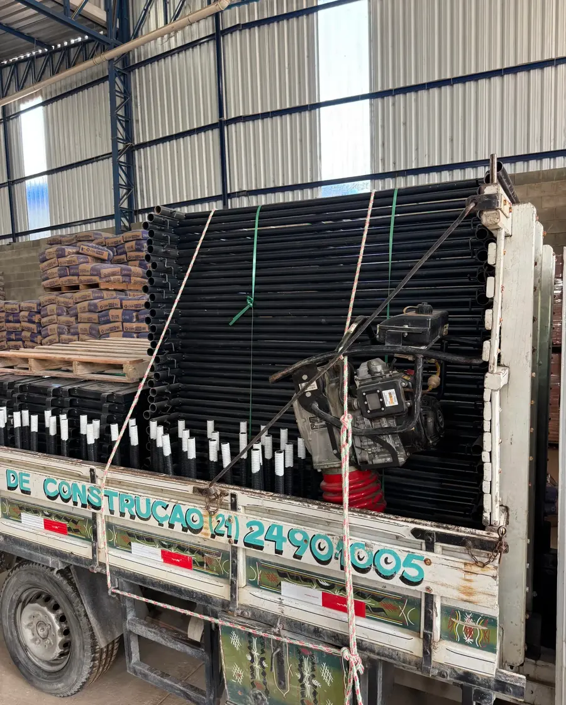

Recreio dos Bandeirantes (Léon Eliachar)
Vargem Grande
Pedra de Guaratiba
Botafogo
Cobertura
Onde entregamos
A entrega e a retirada são feitas com frota própria a partir da unidade mais próxima da obra. Estas são as regiões que atendemos com mais frequência:
- Barra, Recreio e vargens: Recreio dos Bandeirantes, Barra da Tijuca, Barra Olímpica, São Conrado, Joá, Itanhangá, Grumari, Vargem Grande, Vargem Pequena, Camorim
- Jacarepaguá e entorno: Jacarepaguá, Freguesia (Jacarepaguá), Pechincha, Taquara, Tanque, Praça Seca, Anil, Gardênia Azul, Curicica, Cidade de Deus
- Guaratiba, Campo Grande e Zona Oeste: Pedra de Guaratiba, Guaratiba, Barra de Guaratiba, Campo Grande, Santa Cruz, Sepetiba, Cosmos, Senador Vasconcelos, Santíssimo, Bangu, Realengo
- Zona Sul: Botafogo, Humaitá, Flamengo, Laranjeiras, Catete, Copacabana, Ipanema, Leblon, Urca, Gávea, Jardim Botânico
- Zona Norte: Madureira, Méier, Irajá, Penha
A obra fica fora dessas regiões? Chame no WhatsApp mesmo assim. Dependendo do equipamento e do período, conseguimos atender.

Tira-dúvidas
Dúvidas sobre atendimento e entrega
Vocês entregam na obra?
Entregamos e retiramos com frota própria nas regiões atendidas por cada unidade. Informe o endereço da obra no orçamento que confirmamos prazo e condição de entrega.
Quais bairros vocês atendem no Rio de Janeiro?
Temos unidades no Recreio dos Bandeirantes (duas), em Vargem Grande, em Pedra de Guaratiba e em Botafogo, e a entrega sai da que estiver mais perto da obra. Na Barra e no Recreio, atendemos também Barra Olímpica, São Conrado, Itanhangá, Joá e Grumari. Nas vargens e em Jacarepaguá, vamos de Vargem Grande e Vargem Pequena a Camorim, Curicica, Freguesia, Taquara, Anil e Praça Seca. Na região de Guaratiba, cobrimos Barra de Guaratiba, Campo Grande, Santa Cruz, Sepetiba, Cosmos e Santíssimo. Na Zona Sul, de Botafogo e Humaitá a Copacabana, Ipanema e Leblon. Também entregamos em Bangu, Realengo e em parte da Zona Norte, como Madureira, Méier e Irajá. Não achou o seu bairro? Chame no WhatsApp: na maior parte dos casos conseguimos atender.
Como peço um orçamento?
Pelo WhatsApp, que é o caminho mais rápido: mande a lista do que precisa, o endereço da obra e o período. Também dá para usar o formulário do site, que monta a mensagem para você.